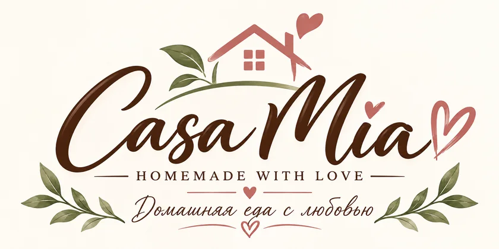
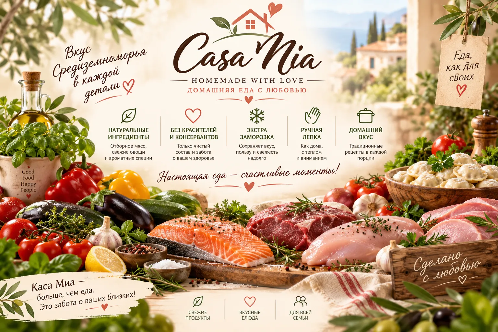

Доставка домашней еды в Анталии — Casa Mia
Домашняя кухня в Анталии, приготовленная с любовью к качеству. Пельмени, вареники, голубцы и блинчики — вручную и к вашему столу.
- Натуральные ингредиенты
- Ручная лепка
- Шоковая заморозка
- Доставка по Анталии

Почему Casa Mia?
Ручная лепка
Каждая партия готовится вручную.
Натуральные продукты
Без усилителей вкуса и консервантов.
Шоковая заморозка
Свежесть сохраняется сразу после приготовления.
Доставка по Анталии
В удобное время по большинству районов.
Как готовить?
Просто и быстро — для замороженных продуктов.
Пельмени / вареники
8–10 минут после закипания
Равиоли / паста
5–6 минут или обжарить на сливочном масле
Голубцы / перец
20–25 минут под крышкой
Котлеты / фрикадельки
На сковороде или в духовке 15–20 минут
CASA MIA
О Casa Mia — домашняя кухня в Анталии
Casa Mia — это домашняя кухня в Анталье для тех, кто ценит настоящий вкус, свежесть и качество.
Мы готовим вручную, небольшими партиями и только из свежих продуктов. Не используем замороженное сырьё, готовые полуфабрикаты и массовое производство.
Каждое блюдо готовится непосредственно под заказ — от замешивания теста и приготовления начинок до соусов, салатов и десертов.
В меню — пельмени, вареники, равиоли, голубцы, фаршированный перец, блинчики, салаты, домашняя паста, синнабоны и готовые блюда. Тесто и начинки собираем сами: свежее мясо, овощи, яйца, творог и мука твёрдых сортов пшеницы.
Casa Mia — это домашняя еда, которую хочется подать своим близким.
Свежо. Вручную. С заботой о каждой детали.
Условия доставки по Анталии
Готовим под заказ и привозим домой в удобное время. Доставка домашней еды работает по Лиману, Хурме, Коньяалты, Ларе, Муратпаше и соседним районам Анталии. Напишите в WhatsApp — подскажем стоимость и ближайший слот.
Районы доставки
Что мы готовим
Пельмени куриные, из индейки и курино-говяжьи; вареники с картофелем, грибами и творогом; равиоли с лососем; голубцы и фаршированный перец; блинчики; салаты «Оливье» и с лососем; паста; синнабоны и готовые блюда — всё с ценами в каталоге.
Какие продукты используем
Свежее мясо и филе, овощи, яйца, творог, сливочное масло, мука твёрдых сортов пшеницы. Без усилителей вкуса, консервантов и заводских полуфабрикатов. Партии небольшие, заморозка — сразу после приготовления.
Доставка по Анталии
Готовим под заказ и привозим домой в удобное время. Лиман, Хурма, Лара, Коньяалты и другие районы — уточняйте при заказе в WhatsApp.
Спасибо, что выбираете нас
Есть вопросы или хотите заказать?
Напишите в WhatsApp или Instagram — отправим актуальное меню и оформим доставку.
WhatsApp: +90 501 338 11 26
Instagram: @casa_mia_antalya
Анталья, Турция